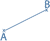

Jmol utilise les combinaisons suivantes pour modifier l'affichage
Action
Souris
Rotation
:
Cliquer-Glisser
Zoom :
Roulette ou Maj + Cliquer-Glisser vers avant - arrière
Translation :
Maj + Cliquer-Glisser bouton droit

Mesure entre deux points :
double clic sur chaque atome